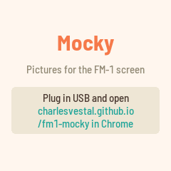
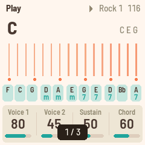

Mocky
Mocky puts your pictures on the FM-1's screen, sent from your browser. Drop a screen mockup on the page, and a moment later it's on the FM-1, exactly as the screen will show it. Use it to check the colors, the sizes and how the text reads at arm's length, on the real thing.



Sending
| Any size | Send a picture of any size, and the page scales it to the screen's 240 × 240. Choose Fit (with a color behind it), Fill (cropped), Stretch or 1:1. A picture made at 240 × 240 arrives pixel for pixel. |
|---|---|
| True colors | The page shows you what the screen will show, in the screen's 16-bit color. Turn on Dither for photos and gradients, if you like. |
| Keep | Pictures you keep stay on the FM-1 when you switch it off. There's 276 KB of room, for up to 64 pictures. A flat mockup takes a few KB, and a photo about 116 KB. |
| Several | Drop several pictures at once, and the page sends them in order. You get a whole flow, ready to step through. |
| Watch a file | Pick a file, and the page sends it again each time it changes. Export from your design tool over the same file, and the FM-1 follows along. |
On the FM-1
| White keys | Show pictures 1–16. A key lights when its picture is kept, and the one on the screen blinks. |
|---|---|
| OCT− · OCT+ | Step to the previous or next picture. SELECT, ALGORITHM, PRESETS and KNOB 1–3 step through them too. |
| PLAY | Starts and stops the slideshow. Turn KNOB 4 to set the pace, from 1 to 30 seconds a picture. |
| SAVE | Keeps a picture you sent without "Keep". SAVE blinks while there's one to keep. |
| HOME | Tells you which picture this is, and how much room is left. |
When you switch it on, Mocky starts on the picture you looked at last.
Screen reader
Mocky works with the FM-1 Screen Reader. A picture can't be put into words, but Mocky tells the reader everything else it shows. You'll hear which picture is on the screen ("picture 3 of 7"), when a new picture arrives and whether it was kept, the slideshow, the room left, and what each button did. Plug in the FM-1 and open the reader in Chrome. It speaks with its own voice, or hands the text to your computer's screen reader.
To go back to the official firmware, use "Back to the stock firmware" in the installer, or M-VAVE's own updater, M-UPGRADE, from m-vave.com/download. M-UPGRADE 3.11 finds the current version of Mocky, but not older ones. M-VAVE and FM-1 are trademarks of their owners. Mocky is not affiliated with them.